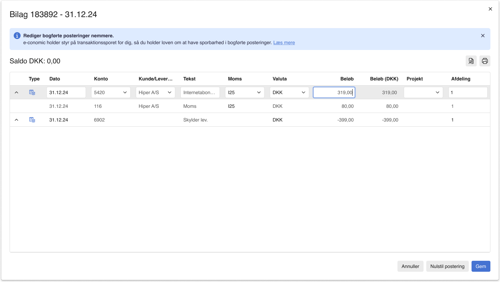

Visma e-conomic.
e-conomic is Denmark’s largest accounting platform, part of Visma. I joined in December 2024, working on the daily ledger, where accountants and bookkeepers spend their day, and with the AI enablement team on how the organisation finds out what to build.
Senior UX Designer, December 2024 to now.
Inline editing
Inline editing brought editing into the table itself, speeding up accountants’ daily workflows considerably. Multi-legged entries are split in the same flow. During the beta and launch we conducted over 40 user interviews, and more than 700 pieces of written feedback came in, shaping the feature that is now out to all users. Read about it on e-conomic.dk.

The shortcuts
The table is made for keyboard work: shortcuts move between fields, create lines and copy values down the column.
Edit booked entries
Editing booked entries used to mean reversing them by hand. Now a correction is typed directly on the booked entry, and the system books the reversal in the background. The support article shows the flow.

Finding out what to build
The other half of the role is with the AI enablement team, on using AI in the discovery process. Prototypes used to be expensive enough that teams rationed their experiments; AI made them cheap, and I have been part of making the harness that makes a prototype built with AI look and work like the real product, so a PM or UXer can turn an idea, a feature request or a PRD into something customers can try.
The longer story of this work is a note of its own: Building to learn.